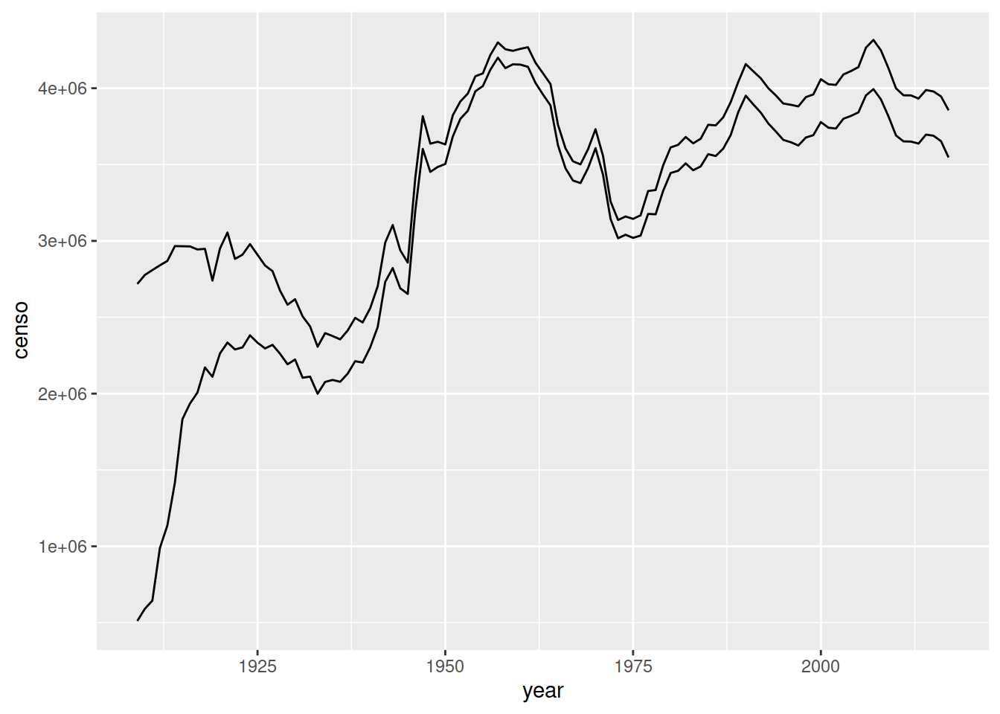
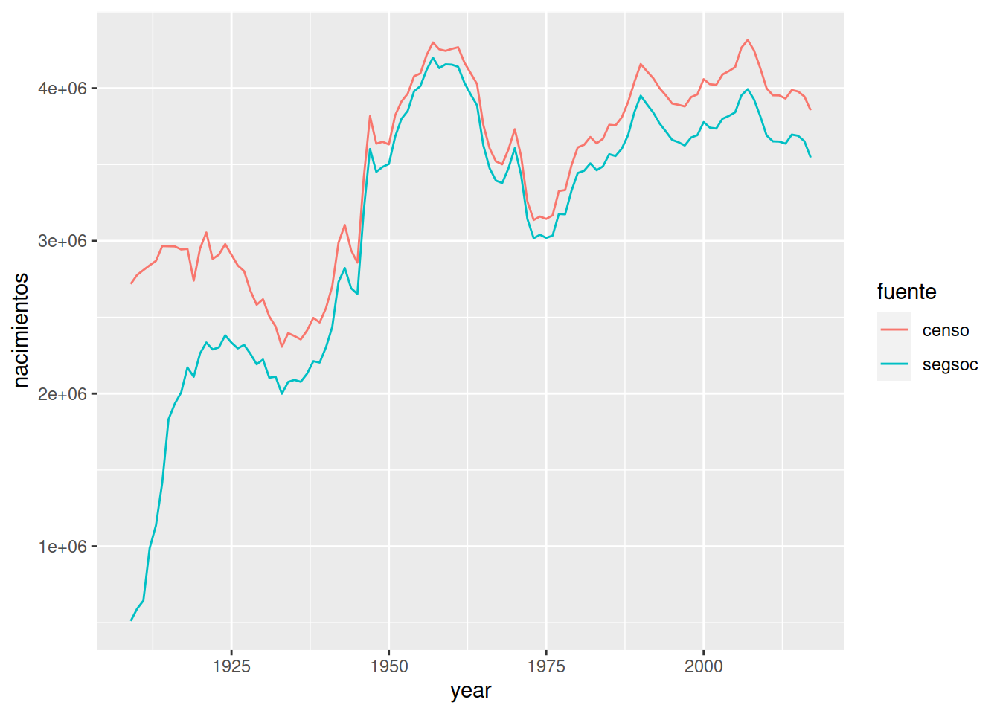

En el paquete babynames tenemos dos fuentes de datos de nacimientos: de la Seguridad Social en el conjunto de datos babaynames y del Censo en births. Los podemos combinar para comprobar si existen discrepancias
library(tidyverse)
library(babynames)
nac.segsoc <- babynames %>%
group_by(year) %>%
summarize(segsoc = sum(n))
nacimientos <- births %>%
left_join(nac.segsoc, by = "year") %>%
rename(censo = births)Explicar BREVEMENTE por qué nacimientos no son datos ordenados
ggplot(data = nacimientos, aes(x = year, y = censo)) +
geom_line() +
geom_line(aes(y = segsoc))
Problemas:
nos vemos forzados a usar una segunda estética y en lugar de hacer una asociación directa
no tenemos leyenda, ni colores
nac.limpio <- nacimientos %>% pivot_longer(-year, names_to = "fuente", values_to = "nacimientos")
ggplot(data = nac.limpio, aes(x = year, y = nacimientos)) +
geom_line(aes(color = fuente)) 
gapminderElegir un conjunto de datos de la web Gapminder, aquí.
Descargar los datos en formato .csv y leerlos en R.
Transformar el conjunto de datos a una tabla de datos ordenados con tres variables: país, año y valor de la variable que habéis elegido.
Probablemente la variable de año tendrá tipo de caracter; usar mutate() y parse_number() para arregarlo.
ggplot, usando el color para distinguir entre países. Podéis representar solo unos pocos países para evitar que el gráfico este saturado.Rellenad este FORMULARIO con vuestros datos y subid
vuestro archivo de R
el fichero .csv que utilizáis..
IMPORTANTE: el nombre de los ficheros que subáis DEBE EMPEZAR con vuestro número de DNI. Por ejemplo,
12345678_ET05_micodigo.R
12345678_ET05_datos.csv